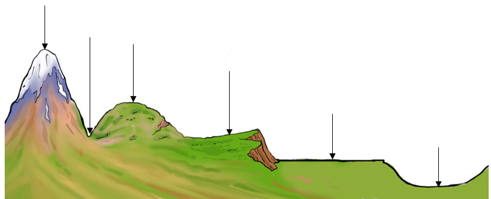

Sura ya nchi ya mahali hutokana na uwepo wa maumbo mbalimbali ya ardhi katika eneo husika. Maumbo hayo hujulikana kama maumbo ya sura ya nchi. Maumbo ya sura ya nchi hutofautiana kimuonekano kulingana na urefu na umbo. Ili kuelewa tofauti za maumbo ya ardhi katika maeneo mbalimbali, inatupasa kujifunza kuhusu maumbo makuu ya sura ya nchi. Maumbo hayo ni milima, mabonde, vilima, uwanda wa juu, besini na tambarare. Kielelezo namba 2 kinaonesha muonekano wa maumbo makuu ya sura ya nchi.

Mtawanyiko na umuhimu wa maumbo makuu ya sura ya nchi ya Tanzania
Kila eneo la ardhi lina sura yake kutokana na maumbo mbalimbali yanayoonekana. Kwa mfano, sura ya nchi ya Tanzania ni ya kipekee kutokana na muonekano wake. Uwepo wa milima, mabonde, tambarare, vilima, besini, na uwanda wa juu ni fahari ya Tanzania. Maumbo haya yote hupatikana katika maeneo mbalimbali ya Tanzania.